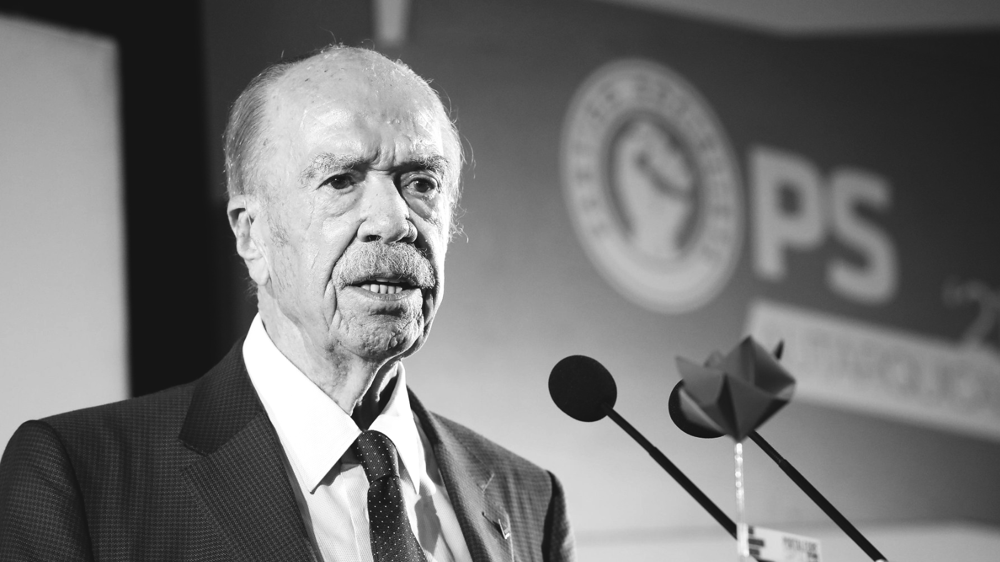
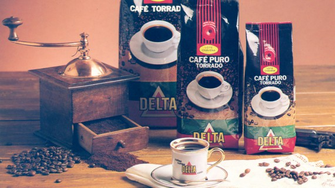
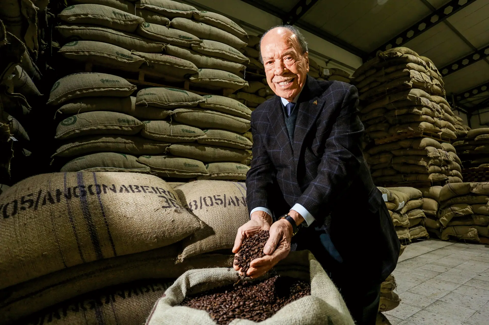
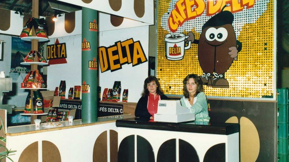
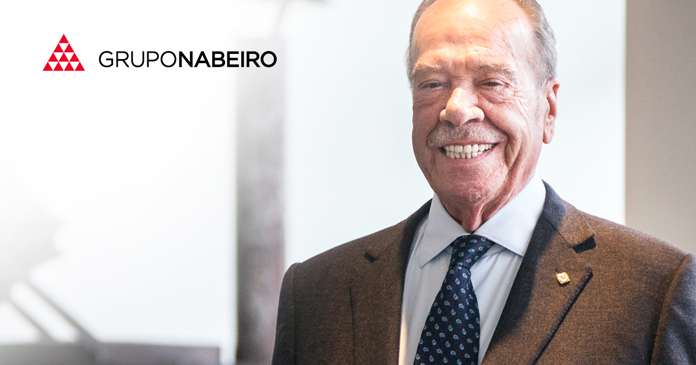
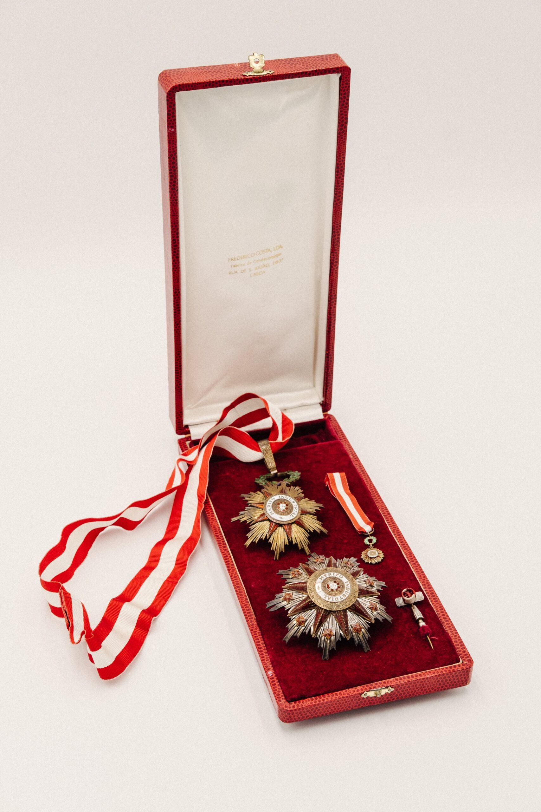
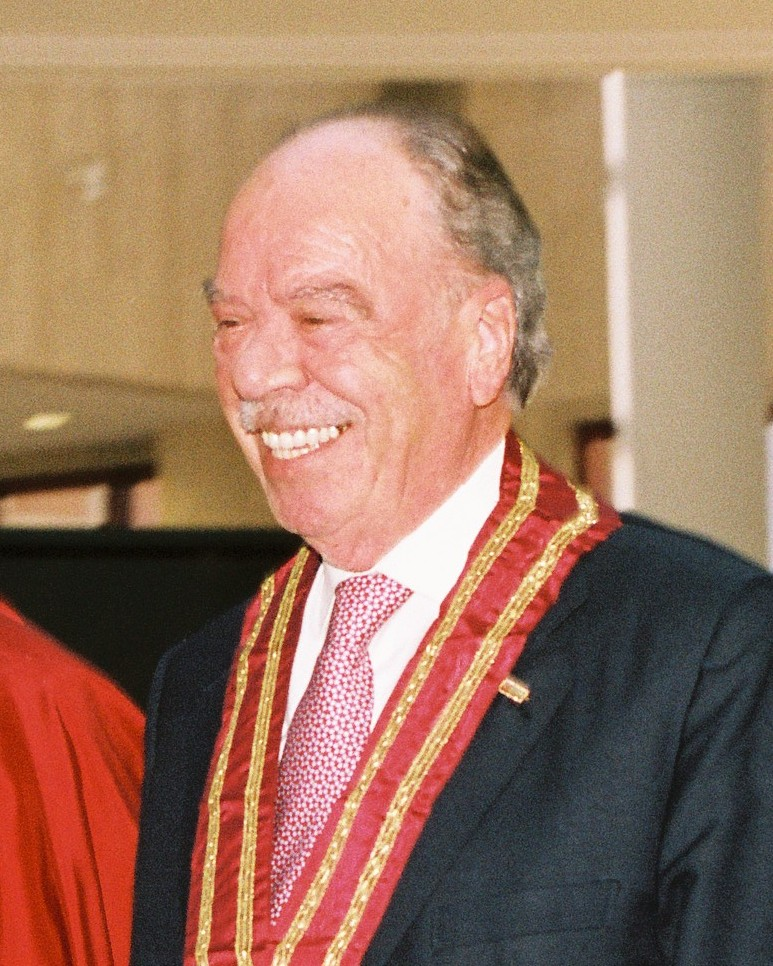
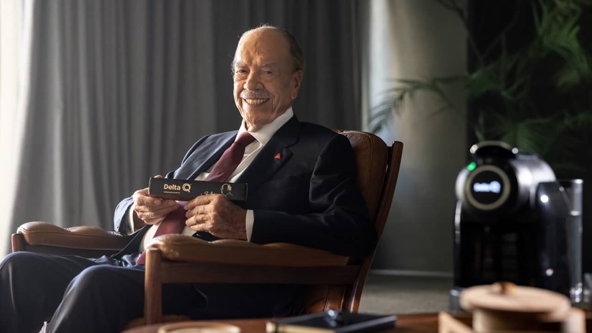
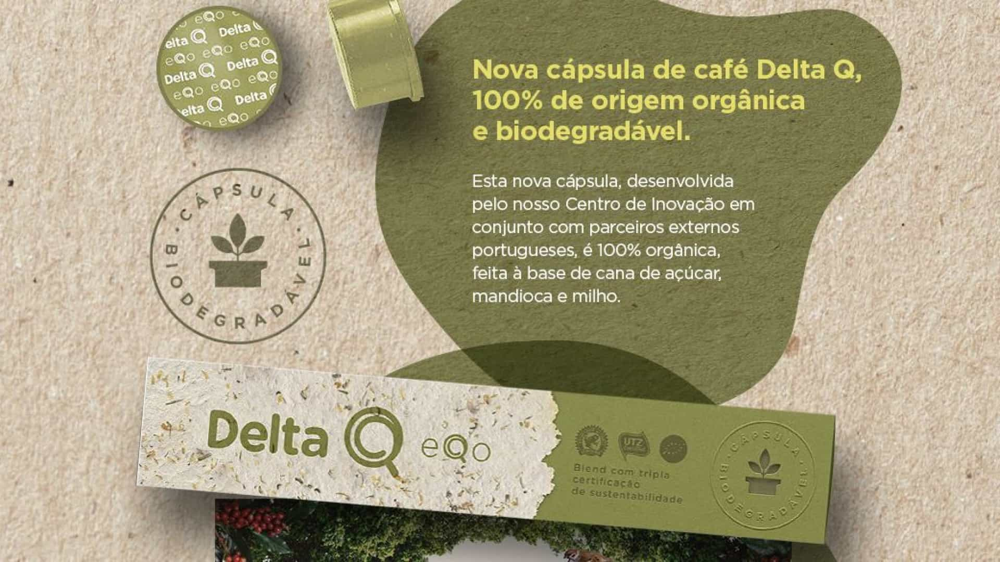
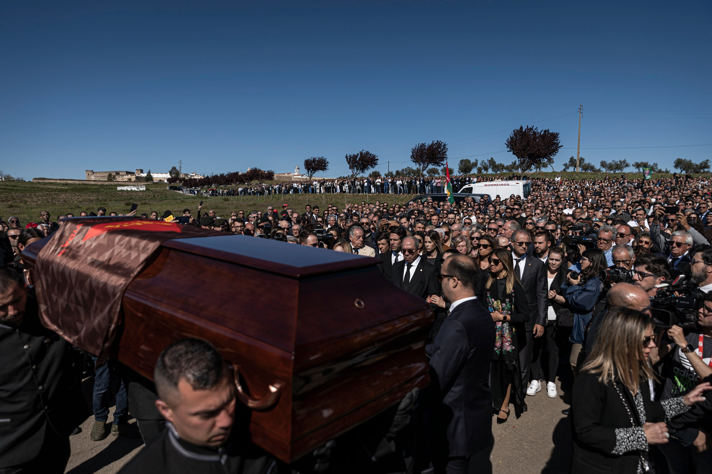

Rui Manuel Azinhais Nabeiro, o terceiro filho de uma família modesta de Campo Maior, nasce a 28 de março. O pai era motorista e a mãe tinha uma pequena mercearia de carnes.
Começa a trabalhar na torrefação de café da família.
1942
Infância
Desde cedo começou a trabalhar em negócios de família.
[Vídeo Completo]
1961
Fundação da Delta Cafés, em Campo Maior.
Infância
Em 1961, na vila de Campo Maior, dentro de um pequeno armazém de 50m2, Rui Nabeiro começou o seu negócio com a torra de 30 kilos de café por dia.
E assim, cria a marca de café mais conhecida dos portugueses, a Delta Cafés.
[Vídeo Completo]
Presidente da Câmara Municipal de Campo Maior
1974

Desistir dos sonhos :(
Rui Nabeiro foi nomeado presidente da Câmara Municipal de Campo Maior em 1962 e em 1972. Voltaria a exercer o cargo em 1977, então por sufrágio universal, sendo reeleito duas vezes e mantendo-se no cargo até 1986.
1982
Constitui a Novadelta

Amor
O início da Novadelta.
Cria a maior fábrica da Península Ibérica
1984

Exames Nacionais
Cria a maior fábrica da Península Ibérica.
1986
O Iniício da internacionalização

Resultados
O negócio expadiu até Espanha com a criação do 1º departamento em Badajoz.
Nasce o Grupo Nabeiro
1988

Medicina
Nasce o Grupo Nabeiro. Com mais de 20 empresas e cerca de 3 800 trabalhadores, está hoje presente em perto de 40 mercados, em áreas como alimentação e bebidas, imobiliário, indústria e serviços, distribuição, turismo e restauração.
1995
É condecorado com a Grã-Cruz da Ordem da Liberdade.

Medicina
Recebe de Mário Soares o grau de comendador da Ordem Civil do Mérito Agrícola, Industrial e Comercial – Classe Industrial.
comendador da Ordem do Infante D. Henrique
2006

Resultados
Em 2006, é novamente distinguido, por Jorge Sampaio, com o grau de comendador da Ordem do Infante D. Henrique.
2007
Expansão

RUIIIII
Lançamento do café em cápsulas Delta Q.
O grupo Nabeiro entra nos vinhos, com a abertura da Adega Mayor.
Inovação e Expansão do grupo
2019

Resultados
O grupo assenta na inovação a sua estratégia de expansão e lança vários produtos, como a
cápsula de café biodegradável, no ano seguinte.
2020
Homenageado com Globo de Ouro
RUIIIII
Comendador Rui Nabeiro recebe prémio Mérito e Excelênncia. O empresário de Campo Maior foi homenageado com um Globo de Ouro. Prémio este entregue por Francsico Pinto Balsemão. “Trabalho para mim, para a comunidade, trabalho para todos"
[Vídeo Completo]
Morreu em Lisboa
2023

Resultados
Faleceu em Lisboa, aos 91 anos, dia do pai o homem que foi um ”verdadeiro pai” para várias
gerações de campomaiorenses e não só.